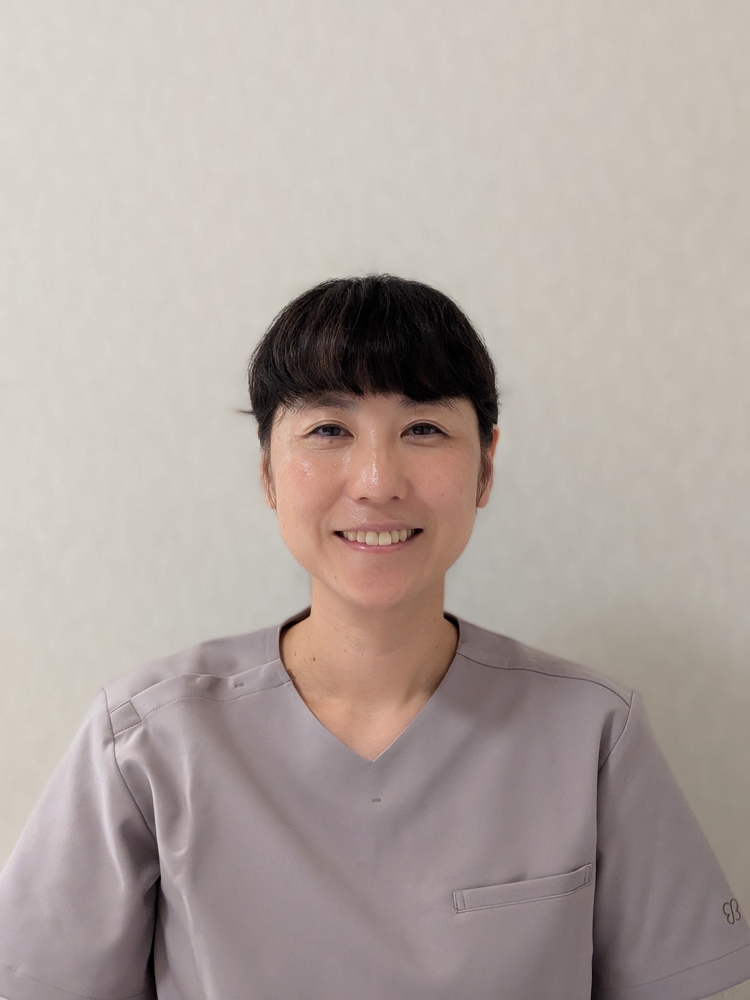

ご自宅までお伺いします
お店まで行くのが大変、行き帰りの時間を短縮したい、家を空けたくない。そんな方におすすめの訪問整体です。移動の負担がなく、小さなお子さまとご一緒でも受けていただけます。
── こんな症状でお困りの方に
一つでも当てはまる方は、お気軽にご相談ください。やさしい刺激の神経整体で、根本からのケアを目指します。
選ばれる理由
お店まで行くのが大変、行き帰りの時間を短縮したい、家を空けたくない。そんな方におすすめの訪問整体です。移動の負担がなく、小さなお子さまとご一緒でも受けていただけます。
強い力で押したりもんだりするのが苦手な方にも受けていただきやすい、やさしい刺激で神経にアプローチする整体です。お子さまにも安心してご利用いただけます。
施術を行うのは女性です。女性おひとりでも、お子さまと一緒でも、安心してご相談いただけます。
対応エリア
下記の地域へお伺いしています。
営業時間

院長紹介
神経整体を学び、家族や自分自身に実践することで、暮らしが少しずつ楽になっていく変化を経験しました。
施術を受けられるご本人と、そのご家族の皆さまが、少しでも笑顔で過ごせるように。できることを一つでも増やしていけるように。そんな想いで、日々の施術に向き合っています。
ご予約前に気になること
A① LINEまたはお電話でご連絡ください。お名前とご希望の日時を3つほどと、施術場所の地域（例：〇市〇区〇丁）をお知らせください。
② 日程を確定します。
③ LINEにてご住所、駐車場の有無、症状など質問させていただきますので、お答えください。
④ ご自宅にてカウンセリング後、施術させていただきます。
A可能であればズボンなどの動きやすい服装でお願いします。「片付けなきゃ。」と思わなくても大丈夫です。スペースはふとん１枚分あれば、施術可能です。
Aはい。当院は女性・お子様（高校生まで）専門の整体院です。お子様ご自身の施術はもちろん、保護者様の施術中にお子様が近くにいらっしゃっても問題ございません。
A当院の神経整体は保険適用外の自由診療となります。確定申告の医療費控除も、適応外です。あらかじめご了承のうえご予約ください。
A堺市・高石市・泉大津市・和泉市・大阪狭山市を訪問対応エリアとしております。エリア外の場合も、まずはお気軽にご相談ください。片道１時間以内は、追加2,000円でさせていただきます。
ご予約方法
LINEでのご予約がスムーズです。お電話の場合は、施術中や移動中で出られないことがありますので、あらかじめご了承ください。
下のボタンから「猫の手」を友だち追加のうえ、メッセージをお送りください。
QRコードを読み取っても
友だち追加できます
施術中や移動中でお電話に出られない場合がございます。その際は、次の営業時間内に折り返しご連絡いたしますので、今しばらくお待ちください。
受付時間 月曜〜金曜 9:30〜15:00